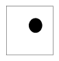
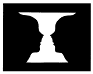
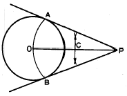
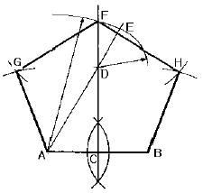
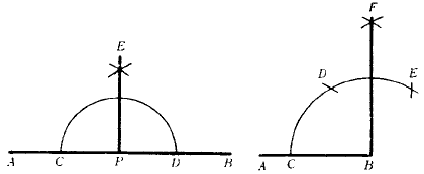
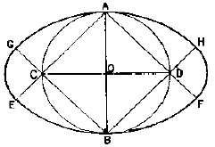
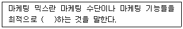

시각디자인기사 (2003-08-31 기출문제)
1과목: 시각디자인론
1. 포스트모더니즘의 해체주의 양식이 등장하게된 계기로서 가장 직접적이고 적합한 내용은?
- 세기말 현상의 일환으로 기존질서나 규범이 무너지는 현상이 나타났다.
- 디자인에 컴퓨터가 이용되면서 그리드 개념이 없는 자유분방한 스타일이 가능해졌다.
- 수직수평의 규격화된 디자인에 대중이 싫증을 느끼게 되었다.
- 몇 사람의 그래픽디자이너에 의해 우연히 시도된 스타일이 확산되었다.
(정답률: 알수없음)

2. 디자인의 조건 중 경제성에 관한 설명으로 적합하지 못한 것은?
- 최소한의 시간과 노력으로 최대한의 효과를 얻는 것
- 최대한의 비용으로 최상의 디자인을 하는 것
- 최소한의 비용으로 최대의 효과를 얻는 것
- 최소한의 재료와 노동력으로 최대의 기능을 발휘하는 것
(정답률: 알수없음)
3. 시각디자인에 있어서 이미지를 쉽게 삽입할 수 있도록 사전에 제작된 이미지 엘리먼트(Element)는?
- Clip Art
- Script
- Calligraphy
- Calligram
(정답률: 알수없음)
4. 다음 중 문자언어를 시각화한 가장 대표적인 것은?
- Symbol Mark
- Logotype
- Pictogram
- Brand Mark
(정답률: 알수없음)
5. 잡지나 신문에 가장 널리 쓰이는 인쇄방법은?
- 활판인쇄
- 오프셋인쇄
- 요판인쇄
- 실크프린트인쇄
(정답률: 알수없음)
6. 다음 중 전파매체 디자인에 해당되지 않는 것은?
- CF
- 방송국 로고 애니메이션
- 드라마
- 방송 그래픽
(정답률: 알수없음)
7. 디자이너의 사회적 역할 중 맞지 않는 것은?
- 소비자 욕구충족
- 의식수준 향상
- 예술과 기술의 조화
- 예술적 특권 확보
(정답률: 알수없음)
8. 다음 시각전달 디자인의 분류 중 잘못된 것은?
- 문자 - 타입페이스, 활자, 펀트
- 영상영역 - CAD, CAM, 시뮬레이션
- 포장영역 - 포장지, 용기, 패턴
- CIP영역 - 보도사진, 상업사진, 기록사진
(정답률: 알수없음)
9. 교통광고에 적합한 유형은?
- 전단광고
- 지하철 광고
- 철도시간표 광고
- 항공기 잡지 광고
(정답률: 알수없음)
10. 아이디어 발상법의 대표적인 브레인 스토밍(Brain Storming)을 진행할 때 바람직하지 않은 방식은?
- 자유분방한 아이디어 제기
- 제기된 아이디어의 분석과 비판
- 가급적 많은 양의 아이디어 요구
- 상위 직급자의 분석과 비판은 금물
(정답률: 알수없음)
11. 다음 중 T.V 매체의 장점이 아닌 것은?
- 속보성
- 기록성
- 반복성
- 대량전달성
(정답률: 알수없음)
12. 시각디자인에 있어서의 티저(teaser)기법이란?
- 호기심과 궁금증을 유발시키면서, 놀리듯이 하나씩 하나씩 메시지를 전달하는 기법
- 언어유희적인 발상법으로 시각적 즐거움을 유도하는 방법
- 누구나 알고있는 예술적 대상을 차용하는 기법
- 타이포그래피(typography)적인 기법을 전체적으로 일컫는 용어
(정답률: 알수없음)
13. 다음 중 주지상표의 판단요소가 아닌 것은?
- 상표의 사용기한
- 거래범위
- 사용방법 및 형태
- 유통기한 표시
(정답률: 알수없음)
14. A4크기, 288쪽의 원색책자 15,000부를 인쇄할 경우 필요한 종이의 소요 연수는 ? (단 A4는 전지 한장에 16쪽임, 여분지는 5%로 계산)
- 567연
- 540연
- 283.5연
- 270연
(정답률: 알수없음)
15. 지역방송국에 제한되어 방송되는 광고는?
- 로컬광고
- 네트워크광고
- 블록광고
- 스폿광고
(정답률: 알수없음)
16. 1960년대 뉴욕을 중심으로 일어난 운동으로서 포스터나 광고, 만화 등 대량생산품의 이미지를 재구성함으로써 대중문화를 미술의 세계와 동화시켰던 미술사조는?
- 옵 아트
- 멤피스 스타일
- 키치
- 팝 아트
(정답률: 알수없음)
17. 디자이너가 선정한 색상이 고객을 만족시키지 못했을 때 디자이너가 취할 수 있는 태도로서 바람직하지 않은 것은?
- 색상견본 책자를 건네주면서 직접 선택하도록 한다.
- 고객이 제시하는 색상문제 뒤에 숨은 고객 자신의 배경, 이유를 이해하기 위하여 노력한다.
- 고객이 제시하는 색상에 대한 의견이 주관적일 때는 그것을 인지시킨다.
- 프로젝트의 목표에 입각해서 합리적인 설명을 한다.
(정답률: 알수없음)
18. 산업디자인의 분류체계에 적합치 않는 것은?
- 제품디자인(Product Design)
- 환경디자인(Environmental Design)
- 시각디자인(Visual Communication Design)
- 컴퓨터그래픽스(Computer Graphics)
(정답률: 알수없음)
19. 다음 디자인의 개념에 관한 설명 중 거리가 먼 것은?
- 설계하다. 계획하다 라는 의미를 갖는다.
- 사물의 재료, 기능, 구조에 조형성을 부여하는 종합적인 계획이다.
- 인간이 보고 즐길 수 있는 매우 아름다운 예술영역을 의미한다.
- 더욱 쾌적한 생활 환경 형성에 기여하는 행위이다.
(정답률: 알수없음)
20. 포스트 스크립트(post script)방식의 글자꼴을 표현하는 말이 아닌 것은?
- 아우트라인 글자꼴
- 벡터 폰트
- 비트맵 글자꼴
- 윤곽선 글자꼴
(정답률: 알수없음)
2과목: 조형심리학
21. 다음 선에 대한 설명 중 틀린 것은?
- 방향성이 있다.
- 무수히 많은 점들의 집합이다.
- 구성의 어떠한 대상이든 가장 큰 영향력을 갖는다.
- 폭은 길이에 비해 상당히 좁기 때문에 단지 길이로만 인식한다.
(정답률: 알수없음)
22. 원근에 의한 공간 표현이 아닌 것은?
- 직선원근법
- 사선원근법
- 대기원근법
- 과장원근법
(정답률: 알수없음)
23. 다음과 같은 도형을 볼 때 심리적으로 느낄 수 있는 지각 상태가 아닌 것은?

- 사각형의 틀에서 벗어나려는 원반의 유동성을 발견할 수 있다.
- 중심(中心) 따위의 특정한 방향으로 이끌리는 인력(引力)이 느껴질 수 있다.
- 주변의 사각형에 대해 관련하는 어떤 내적인 긴장(tension)을 보여준다.
- 어둡기와 밝기에 대한 명암의 상태를 보여준다.
(정답률: 알수없음)
24. 모든 예술에 있어서 기본적인 창조적 행위이며 예술가의 정서나 마음의 상태를 나타내는 예술적 행위를 뜻하는 것은?
- 표현(表現)
- 일치(一致)
- 조형(造形)
- 지각(知覺)
(정답률: 알수없음)
25. 사진은 덴마크의 심리학자인 루빈(E. Rubin)이 그린 루빈의 컵이다. 이것은 무엇을 실험하고자 한 것인가?

- 색채감각과 무색감각
- 명도와 채도
- 면과 선
- 도형과 바탕
(정답률: 알수없음)
26. 사물을 보는 사람의 눈에 대한 설명 중 틀린 것은?
- 눈은 시각정보를 받아들이기만 할 뿐 분석을 하지 않는다.
- 사람은 코나 귀 보다 주로 두 눈에 의해 환경을 알아 본다.
- 직접 체험이 간접 체험보다 더 정확하다.
- 사람의 눈은 독수리의 눈보다 멀리보고 물고기의 눈보다 넓게 본다.
(정답률: 90%)
27. 우리가 창문에 비춰진 그림자만 보고도 사람인줄 알았다면 이러한 지각의 특성을 무엇이라 하는가?
- 지각의 일반화
- 지각의 자율화
- 지각의 표준화
- 지각의 강조화
(정답률: 알수없음)
28. 비숫한 성질을 가진 요소는 비록 떨어져 있어도 덩어리져 보이는 경향이 있다. 이 법칙을 이용한 색맹검사표는 어떤 원리를 응용한 것인가?
- 유사의 원리
- 근접의 원리
- 패쇄의 원리
- 연속의 원리
(정답률: 알수없음)
29. 미술작품의 감상자가 느끼는 것 중에서 긴장-이완 모형은 다음 중 어떤 심리적 기제에 기초하여 개발된 것인가?
- 원형이론
- 동질정체이론
- 감정이입이론
- 계산이론
(정답률: 알수없음)
30. 점에 대한 설명이 아닌 것은?
- 점이 작아지면 일반적으로 그 넓이는 지각된다.
- 수학적인 점은 제로 차원의 대상이라고 정의된다.
- 기하학적인 점은 작도상으로는 선의 교점으로도 설명된다.
- 기하학적인 점은 간접적이며, 직관적인 점의 가치가 주어질 뿐이다.
(정답률: 알수없음)
31. 다음 그림의 작도법은?

- 원주밖에 있는 한점에서 접선 그리기
- 두 개의 직선에 접하는 원 그리기
- 삼각형에 내접하는 원 그리기
- 원 주와 같은 길이의 직선 그리기
(정답률: 알수없음)
32. 다음 중 통일성을 주는 방법이 아닌 것은?
- 근접
- 반복
- 연속
- 변화
(정답률: 알수없음)
33. 토운(Tone)의 성질에 관한 내용으로 적절치 않은 것은?
- 어두운 부분과 밝은 부분 사이에 연결되어 있는 명도의 단계를 말한다.
- 이웃하는 토운은 모두 명도와의 관계이다.
- 빛의 성질과 특성에 일치한다.
- 반사광에 영향을 받지 않는다.
(정답률: 알수없음)
34. 디자인 작업에서 균형(balance)에 대한 설명 중 적당하지 않은 것은?
- 균형이 잡힌 작품에서는 형태, 방향, 위치같은 모든 요소들이 상호간에 복합적으로 결정되며, 작품 전체는 각 부분의慨필연적인 결속으로 나타난다.
- 불균형한 작품은 우연적, 가변적으로 보이며, 따라서 전체적인 안정감을 준다.
- 불균형한 작업은 그 작품이 의도하는 분명한 의사를 보여주지 못한다.
- 불균형한 작품은 위치와 형태를 바꾸려는 성향을 보인다.
(정답률: 알수없음)
35. 미학에 대한 설명 중 가장 합리적인 것은?
- 예술가들의 미에 대한 명확한 관념
- 보편적으로 존재하는 미에 대한 감정
- 아름다운 것에 대한 일반적인 사람들이 느끼는 감정
- 미에 대한 문제를 조직적인 방법으로 해명하려는 학문
(정답률: 알수없음)
36. 사람이 두 눈을 떴을 때 지각할 수 있는 대략적인 시각의 범위는?
- 상하 약 90도, 좌우 약 100도
- 상하 약 110도, 좌우 약 150도
- 상하 약 130도, 좌우 약 190도
- 상하 약 150도, 좌우 약 230도
(정답률: 알수없음)
37. 인쇄물의 명료성을 돕는 도구로서 비례감을 기본으로 한 디자인의 틀(구조) 역할을 하는 것은?
- 컨셉
- 그리드
- 황금비
- 통일감
(정답률: 알수없음)
38. 다음 그림의 설명 중 맞는 것은?

- 원에 내접하는 정오각형 그리기
- 정오각형으로 정원 그리기
- 주어진 직선을 한 변으로 하는 정오각형 그리기
- 정오각형의 중심점 찾기
(정답률: 알수없음)
39. 다음 기본작도의 그림에 대한 설명 중 잘못된 것은?

- 주어진 직선을 수직이등분하는 방법
- 주어진 직선상의 한점에서 수선을 긋는 방법
- 주어진 직선에 평행선을 긋는 방법
- 주어진 선분의 등분법
(정답률: 알수없음)
40. 단축이 주어진 근사 타원의 작도법에서 순서상 세 번째에 해당하는 항목은?

- 수평중심 CD를 긋고 AC, AD와 BC, BD를 구하여 연장한다.
- C와 D를 중심으로 교점을 원호로 연결한다.
- 단축의 길이와 같은 지름 AB를 정한다.
- A와 B를 중심으로 각각 반지름 원호를 그어 교점 E, F, G, H를 구한다.
(정답률: 알수없음)
3과목: 광고학
41. 다음 문장 중 ( )속에 알맞은 말은?

- 조합
- 선별
- 분류
- 교환
(정답률: 알수없음)
42. 뉴욕의 광고 크리에이터인 제리 시아노(Jerry Siano)가 주장한 위대한 광고의 4가지 요소가 아닌 것은?
- 재미있어야한다.
- 인간적이어야 한다.
- 정보를 제공해야 한다.
- 관능에 호소해야한다.
(정답률: 알수없음)
43. 그린 마케팅의 개념이 아닌 것은?
- 기업활동의 기능과 목표를 환경적인 가치위에서 운영
- 소비자들의 단순한 욕구나 수요충족 지향적인 마케팅
- 인간과 자연의 상호 의존성에 초점을 맞춘 마케팅
- 공해 물질 배출량이 적거나, 폐기물을 재활용한 녹색 상품개발
(정답률: 알수없음)
44. 인터넷에서 가장 많이 사용되는 형태로 인터넷 사이트 내특정 위치에 사각형의 띠 형태로 광고가 보여지는 것을 말하며 소비자가 이를 클릭할 경우 해당 광고메시지와 연결되는 형태의 광고는?
- 컨텐트형 광고
- 틈입형 광고
- 푸쉬형 광고
- 배너광고
(정답률: 알수없음)
45. 다음 중 의견 지도자의 속성과 관계 없는 것은?
- 많은 정규교육을 받았다.
- 사회· 경제적 지위가 높다.
- 상품을 채택하는데 혁신적이다.
- 감성적이다.
(정답률: 알수없음)
46. 광고의 전달수단은 매스커뮤니케이션에 의하는가와 그 외의 방법에 의하는가에 따라 분류되는데, 다음 중 커뮤니케이션 형태별 구분이 맞는 것은?
- 개척광고와 경쟁광고
- 기본적 수용 광고와 선택적 수용 광고
- 매스컴 광고와 SP광고
- 감정광고와 설명광고
(정답률: 알수없음)
47. 기업 이미지 제고를 위한 기업광고는 촉진믹스 중 어디에 속하는가?
- 판매촉진
- PR
- 대인판매
- 퍼블리시티
(정답률: 알수없음)
48. 다음 중 소비자 관여도의 결정요인과 거리가 먼 것은?
- 개인적 요인
- 제품 요인
- 심리적 요인
- 상황적 요인
(정답률: 알수없음)
49. 광고인들에게 반드시 요구되는 지식의 카테고리와 비교적 거리가 먼 것은?
- 종교에 대한 지식: 소비자가 어떤 종교를 믿는지, 어떤 마음가짐으로 세상을 살아가는지 알아야 한다.
- 제안에 대한 지식: 소비자의 니드를 파악하고 그들에게 제안할 짜릿한 이야기 거리를 갖고 있어야 한다.
- 매체에 대한 지식: 각 매체의 특성을 잘 알고, 가장 효율적인 운용을 할 수 있어야 한다.
- 유통채널에 대한 지식: 소비자와 생산자가 최종적으로 만나는 접점, 유통채널에 대해 잘 알아야 한다.
(정답률: 알수없음)
50. 다음 중 "라이프스타일"의 개념이 가장 유효한 기준으로 작용할 수 있는 것은?
- 시장세분화
- 제품개발
- 소비자행동
- 인구학
(정답률: 알수없음)
51. 커뮤니케이션 요소 중 소리, 빛깔, 빛, 모양 따위의 일정한 부호에 의해 의사를 전달하는 것은?
- 정보(Information)
- 기호(Sign)
- 신호(Signal)
- 픽토그램(Pictogram)
(정답률: 알수없음)
52. 이상적인 브랜드 이미지의 특징이 아닌 것은?
- 타 브랜드와 차별된다.
- 경쟁상황에 따라 유동적이다.
- 구매자 특성과 어울린다.
- 오랜기간 유지된다.
(정답률: 알수없음)
53. 마케팅의 기본 기능은?
- 이미지창조
- 생산창조
- 배급창조
- 수요창조
(정답률: 알수없음)
54. 박스광고, 배너광고, 좌측 메뉴버튼광고, 본문 버튼광고 등은 다음 중 어떤 광고에서 쓰이는 용어들인가?
- 온라인 광고
- 인터넷 광고
- 다이랙트마케팅 광고
- POP광고
(정답률: 알수없음)
55. 통합 마케팅 커뮤니케이션(IMC)의 개념과 가장 관계 없는 것은?
- SP
- PR
- PC
- DM
(정답률: 알수없음)
56. 라디오 CM 관련용어에 대한 설명 중 올바른 것은?
- FO; 소리가 들어온다.
- FU; 소리가 차차 높아진다
- FD; 소리가 사라진다.
- FI; 소리가 작아진다.
(정답률: 알수없음)
57. 조형적 표현이 중요한 요소로서 작용하는 조직내에서 기획, 생산, 영업, 경영 등의 각 분야와 관련된 조형적 문제를 총괄적으로 처리하고 지휘하는 전문가는?
- 카피라이터
- 아트디렉터
- 프로듀서
- CM프레너
(정답률: 알수없음)
58. A는 자동차를 새로 구입했다.그런데 사고 보니까 사기 전에 가졌던 신념과 같지 않아 뭔가 불안한 느낌을 가졌다. 이런 소비자 심리 상태는?
- 구매후 불안심리
- 소비적 공황심리
- 인지부조화심리
- 불합리심리
(정답률: 알수없음)
59. 태도(態度)를 구분하는 요소가 아닌 것은?
- 이성적 요소
- 인지적 요소
- 감정적 요소
- 행동적 요소
(정답률: 알수없음)
60. 광고매체로서 신문의 장점이 아닌 것은?
- 긴 수명
- 선택적 주의
- 광범위한 도달
- 메시지 제작의 유연성
(정답률: 알수없음)
4과목: 색채학
61. 다음 중 가장 짧은 파장의 빛은?
- 녹색
- 파랑
- 빨강
- 노랑
(정답률: 알수없음)
62. 다음 빛에 대한 설명 중 맞는 것은?
- 분광 된 빛을 프리즘에 통과시키면 또 분광이 된다.
- 가시광선에서 파장이 긴 부분은 푸른색을 뛴다.
- 가시광선의 범위는 380nm에서 780nm라고 한다.
- 자외선은 열 작용을 하므로 열선이라고도 한다.
(정답률: 알수없음)
63. 조명등과 연색성에 관한 설명 중 틀린 것은?
- 청색은 백열등에서 약간 녹색을 띤다.
- 청색은 형광등에서는 크게 변하지 않는다.
- 나트륨등에서는 빨강이 강조된다.
- 적색은 백열등에서 더욱 선명하다.
(정답률: 알수없음)
64. 마음을 편안하게 해주며 신경 및 근육의 긴장을 완화시키는 효과가 있다고 알려진 색은?
- 회색
- 보라색
- 초록색
- 노란색
(정답률: 알수없음)
65. 빨간 성냥불을 어두운 곳에서 돌리면 길고 선명한 빨간원이 생긴다. 이러한 현상은?
- 색의 동화
- 색의 대비
- 색의 잔상
- 색의 시인성
(정답률: 알수없음)
66. 문.스펜서의 면적효과에서 가장 잘 어울리는 강한 색과 약한 색의 면적의 비는?
- 3:5
- 4:26
- 7:20
- 12:32
(정답률: 알수없음)
67. 디자인 사조에서의 양식과 색채의 관계를 묶은 것이다. 잘못된 조합은?
- 미니멀리즘 - 단순한 기하학적 형태를 사용하지만 색채는 다양하게 사용
- 팝아트 - 전체적으로 어두운 색조 사용하고 그 위에 혼란한 강조색 사용
- 데스틸 - 검정, 흰색과 빨강, 노랑, 파랑의 순수한 원색
- 아르누보 - 연한 파스텔계통의 부드러운 색조
(정답률: 알수없음)
68. 색의 상징성과 관련된 내용 중 가장 타당한 것은?
- 빨강 - 대륙으로는 아프리카 대륙을 상징
- 노랑 - 안전색채로는 주의 또는 경계를 상징
- 파랑 - 신분이나 연령으로는 원숙함을 상징
- 흰색 - 전통 오방에서 남쪽을 상징
(정답률: 알수없음)
69. KS의 일반 색명은 어느 색명법에 근거를 두고 있는가?
- ASA
- CIE
- ISCC-NBS
- NCS
(정답률: 0%)
70. 다음 배색 중 인접색의 조화에 가장 가까운 것은?
- 연두-보라-빨강
- 주황-청록-자주
- 빨강-파랑-노랑
- 자주-보라-남색
(정답률: 알수없음)
71. 다음 중 색상대비의 효과가 가장 명료한 것은?
- 빨강/자주
- 빨강/파랑
- 파랑/보라
- 보라/검정
(정답률: 알수없음)
72. 다음 중 가장 명도차가 큰 배색의 사례는?
- 파랑-빨강
- 연두-청록
- 파랑-주황
- 노랑-녹색
(정답률: 알수없음)
73. 세계의 어린이들이 가장 선호하는 색으로 학문적으로는 사회과학을 나타내고, 기본적으로 자손의 번창을 의미하는 색은?
- 보라색
- 초록색
- 하늘색
- 노란색
(정답률: 알수없음)
74. 먼셀의 색상기호 "2.OYR 3.5/4.0"과 같은 관용색명은?
- 황토색(Yellow Ocher)
- 밤색(Maroon)
- 진분홍(Rose Carmine)
- 레몬색(Lemon Yellow)
(정답률: 알수없음)
75. 색료의 3원색이 아닌 것은?
- blue
- cyan
- yellow
- magenta
(정답률: 알수없음)
76. 먼셀표색계에 관한 다음 기술 중 잘못된 것은?
- 채도는 2, 4, 6 등과 같이 2단위로 구분하였으나, 저채도 부분에 1, 3을 더 추가하였다.
- 색상은 적, 황, 녹, 청, 자색을 기본색으로 하였다.
- 색표시법은 H C/V이다.
- 명도는 1단위로 구분하였으나 정밀한 비교를 감안하여 0.5단위로 나눈 것도 있다.
(정답률: 알수없음)
77. 다음 채도의 설명 중 가장 적절한 것은?
- 순색으로 반사율이 높은 색이 채도가 높다.
- 반사량이 적은 색이 채도가 높다.
- 채도에서는 포화도가 존재하지 않는다.
- 무채색도 채도 값이 있다.
(정답률: 알수없음)
78. 감법혼색에 대한 설명 중 옳은 것은?
- 혼합색의 밝기는 사용색의 면적비에 의해 평균되어 나타난다.
- 감법혼색의 삼원색은 자주(M),황색(Y),녹색(G)이다.
- 혼합하면 할 수록 명도가 높아진다.
- 색을 혼합할 수록 색은 점점 탁하고 어두워진다.
(정답률: 알수없음)
79. 추상체와 간상체 양쪽이 작용하지만 상이 흐릿하여 보기 어렵게 되는 시각상태를 무엇이라 하는가?
- 색순응
- 박명시
- 암순응
- 중심시
(정답률: 알수없음)
80. 다음 중 색채조절시 고려해야 할 요소와 거리가 먼 것은?
- 눈의 피로를 감소시켜야 한다.
- 작업의 활동적인 의욕을 높인다.
- 위험을 방지하는 안전을 고려한다.
- 심미적인 조화를 우선적으로 고려한다.
(정답률: 알수없음)
5과목: 사진 및 인쇄제판론
81. 컬러확대기에서 컬러프린터의 색감을 조절하기 위해 주로 사용되는 필터는?
- 할로겐 필터
- 혼광 필터
- 박스 필터
- 다이크로익 필터
(정답률: 알수없음)
82. 현상액 중에서 노출된 감광재료를 현상하다가 꺼내어 수세만하고, 정착액에 담그지 않은 상태에서 제2노출을 주었다가 다시 현상액에 넣어 현상시키면 반전효과가 나타나는 현상은?
- 근접 효과
- 에버하르트 효과
- 코스틴스키 효과
- 사바티에 효과
(정답률: 알수없음)
83. 빛(Light)을 벽이나 천장 등에 비춰서 그 반사광으로 피사체를 조명하는 간접광은?
- 디퓨즈라이팅
- 바운스라이팅
- 스포트라이팅
- 다이렉트라이팅
(정답률: 알수없음)
84. 자외선을 차단하고 동시에 렌즈의 보호 역할도 하는 무색 필터는?
- CC 필터
- UV 필터
- ND 필터
- R 필터
(정답률: 알수없음)
85. 각기 다른 색으로 모여진 백색광이 렌즈를 투과 할 때에 색의 파장으로 인해 초점을 맺는 위치가 달라서 해상력이 떨어질 때 생기는 수차는?
- 색수차
- 코마수차
- 왜곡수차
- 구면수차
(정답률: 알수없음)
86. 화학 펄프 70% 이상 사용하며 교과서, 서적, 잡지의 본문에 사용하는 종이는?
- 아트지
- 중질지
- 상갱지
- 갱지
(정답률: 알수없음)
87. 컬러 네거티브 필름에 있어서 청감 유제층에서 만들어지는 색은?
- Cyan
- Magenta
- Yellow
- Blue
(정답률: 알수없음)
88. 35mm 필름을 사용하는 카메라의 화면 크기는?
- 24x18mm
- 24x36mm
- 6x6mm
- 4x5mm
(정답률: 알수없음)
89. 표면에 질감이 있는 피사체의 디테일 표현과 입체감을 가장 강조할 수 있는 조명은?
- 상단조명
- 하단조명
- 후면조명
- 측면조명
(정답률: 알수없음)
90. 다음 중에서 카메라 렌즈를 극단적으로 조였을 때 해상력이 떨어지게 되는 가장 큰 이유는?
- 빛의 회절
- 빛의 간섭
- 빛의 굴절
- 빛의 반사,흡수
(정답률: 알수없음)
91. 피사계 심도(Depth of Field)가 가장 깊은 렌즈 구경은?
- F/1.4
- F/5.6
- F/8
- F/22
(정답률: 알수없음)
92. 촬영한 뒤에 필름에 생긴 잠상을 가시상으로 환원시키는 과정은?
- 현상
- 중간정지
- 정착
- 건조
(정답률: 알수없음)
93. 종이의 표면을 아교,송진,녹말,합성수지같은 교질 재료로 피복 시키는 종이 제조 공정은?
- 고해(Beating)
- 사이징(Sizing)
- 전충(Loading)
- 착색(Coloring)
(정답률: 알수없음)
94. 다른 잉크에 비하여 점도와 점착성이 낮고 비화선부의 잉크를 쉽게 긁어주고 인쇄 후 신속히 증발 건조되는 것이 요구되는 인쇄잉크는?
- 그라비어 잉크
- 볼록판 잉크
- 평판 잉크
- 스크린 잉크
(정답률: 알수없음)
95. 필름의 현상 결과를 좌우하는 요인과 가장 거리가 먼 것은?
- 현상시간
- 현상온도
- 교반방법
- 감광도
(정답률: 알수없음)
96. 흑백필름 현상약품 성분 중에 현상주약이 아닌 것은?
- 메톨
- 하이드로퀴논
- 페니돈
- 요드화칼륨
(정답률: 알수없음)
97. 컬러 필름의 노출시 녹감층과 적감층에 불필요한 청색의 유입을 막아 주는 역할을 하는 것은?
- 할레이션 방지코팅
- 중간층
- 커플러
- 황색필터층
(정답률: 알수없음)
98. 접사 촬영용 도구와 거리가 먼 것은?
- 중간링(extension tube)
- 벨로우즈(bellows)
- 시프트렌즈(shift lens)
- 접사렌즈(close-up lens)
(정답률: 알수없음)
99. 1매씩 문자· 사진 등 인쇄물의 내용을 바꾸어 인쇄할 수 있고, 필요한 때에 필요한 매수를 필요한 내용으로 즉시 인쇄할 수 있는 방법은?
- 오프셋 인쇄
- 볼록판 인쇄
- 스크린 인쇄
- 디지털 인쇄
(정답률: 알수없음)
100. 가이드 넘버가 32인 스트로보로 조명거리가 4m인 피사체를 촬영할 때 적정 조리개 값은?
- F/5.6
- F/8
- F/11
- F/16
(정답률: 알수없음)